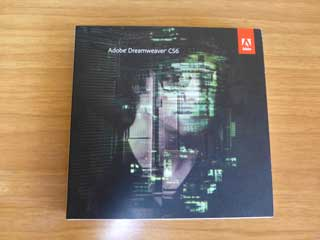

おすすめのホームページ作成ソフト
こちらのDreamweaverは数年前に購入したものの、使い方がよくわからなかったため、ずっと放置してました。

■Dreamweaver
アドビ社 月額数千円～
けれども、ページ数の多いサイトを一括で修正する必要があり、その際に使ってみたところ便利なソフトだったため、最近は当サイトでもこのDreamweaverを使用しています。
ちなみに、当サイト運営者が購入した当時はPCにインストールするパッケージ版ソフトでしたが、現在では月額料金を払って使用するクラウド版へと移行しています。現在、上記のパッケージ版のソフトは販売されていませんのでご注意ください。
Dreamweaverのメリットとデメリット
ホームページを作成するツールとして、現在はWordPressなどのCMSが人気ですが、一括での更新はしやすいものの、個別ページごとにカスタマイズすることは困難かと思います。
OGPタグは個別ページごとに画像や説明文を設定する必要がありますし、構造化データも「タイプ」に合わせてそれぞれのページで個別に対応する必要があります。プラグインなどを使ったとしても、そのページにだけ個別に変更を適用するといったことはCMSでは弱い印象があります。
その点、Dreamweaverで作成する場合は「テキストエディタ＋FFFTP」のように使えるため、個別ページごとの対応がしやすく、またライブラリ機能を使うことでサイドバーなどの一括変更もしやすいです。
そのため、「CMS」と「テキストエディタ＋FFFTP」の両方のメリットを合わせたようなソフトと感じています。
「ライブラリ機能」でホームページの更新が簡単
ホームページの場合、新規ページを追加した際のサイトバーやナビゲーション部分の更新に手間がかかるかと思います。数ページ程度のサイトならまだしも、ページボリュームの多いサイトでは１ページずつ更新していくと膨大な手間がかかります。
そのような時、Dreamweaverのライブラリ機能を使えば、サイト内の特定の箇所のみを一括して更新することができます。
例えば、サイドバーをライブラリに登録しておき、このライブラリを更新することで、ホームページ全体のサイドバーを一括して更新することができます。
サイドバーの部分のみ、あるいはフッターの部分のみなどを一括して修正することができるため、WordPressやMovableTypeなどのCMSのウィジットを更新するような感覚で使うことができます。
自由度の高い「検索・置換機能」で一括修正が可能
無料ソフトでもサイト内のテキストを一括して検索・置換できるツールがありますが、Dreamweaverではキーワードだけではなく、特定のタグ単位での修正もできるため自由度が高いです。
無料ツールでは複数行での置換ができないことも多いですが、Dreamweaverは複雑な置換作業にも対応しています。
当ホームページでは以前にxhtmlからHTML5へと修正しましたが、その際にこの置換機能を使って、サイト内のファイルを<div>から<article>などへ簡単に修正することができました。
また、ホームページを独自SSLに対応する際、記事内の内部リンクなどもHTTPSに修正する必要がありますが、「http:」を検索して「https:」に置換するだけで簡単に修正することができました。CMSでは個別ページの編集画面にログインした後、記事内の「http:」の内部リンクを修正して保存といった作業を全ページでする必要があるため、膨大な時間がかかりますが、Dreamweaverなら数十秒程度で修正することができて便利でした。
そのほか、AMPページに対応する際、既存ファイルをコピペしたのち、DTDや画像タグをAMP HTMLに変換することで簡単に修正できました。
<p>や<br />などのHTMLタグの自動挿入が的確
CMSなどでも段落や改行タグの自動挿入機能はありますが、おかしな位置に挿入されるケースも多いです。
例えば、段落のpタグを挿入したいのに<br>が２個連続で挿入されてしまったり、あるいは<br />で改行すべきDTDなのに<br>が挿入されてしまうなど、モヤモヤしてしまうこともあります。
けれども、DreamweaverではDTDに沿って的確なタグが挿入されるため、きれいなHTMLが出力される印象があります。また、よく使うタグなどは個別にショートカットに登録できるので、効率的に作業を進めることができます。
リアルタイムでのデザイン修正が可能
こちらは当サイト運営者はあまり使用していませんが、CSSでデザインの修正をする際、分割ビューでリアルタイムに実際の仕上がりを確認しながら作業を進めることができます。
タグ手打ちで作成する場合、スタイルシートを修正してファイルを保存し、実際にブラウザでの表示を確認して調整をする手順になりますが、ファイルの保存とブラウザでの確認をしなくてもリアルタイムで修正できます。
ただし、Chromeデベロッパーツールなら作成段階ではなく、既にネット上で公開されているサイトのCSSをブラウザで変更しながら確認できるため、デザインの修正についてはChromeデベロッパーツールの方が便利かもしれません。
Dreamweaverのデメリット
Dreamweaverには実用的なテンプレートがついていないため、テンプレートについては自分で用意する必要があります。この点では、多くの無料テンプレートが用意されているWordPressなどの方が使いやすいかと思います。
また、静的なホームページでの作成となるため、サーバーへのアップロードが完了するまでは変更が反映されません。そのため、リアルタイムで頻繁に情報が更新されるようなランキングサイトなどの場合、その都度、ファイルをアップロードする必要が出てくるため、そのようなサイトには向いていないかと思います。
また、最低限のHTMLタグやCSSの知識は必要になるため、はじめて作成される方にはあまり向いてないかもしれません。
加えて、現在はパッケージ版の商品がなくなってしまい、月額料金で使用するサブスクリプション課金になっているため、毎月継続して費用がかかることになります。
2012年の注文履歴では約45,000円となっていましたので、何年間も利用した今となってはかなり安い気がしますが、このパッケージ版ソフトは既に販売終了となっています。
ただ、月額課金で利用してもそれほど高いわけでもないと感じています。
初心者の方には使いづらい面があるかもしれませんが、今まで手打ちでホームページを作成してきた方は作業の効率化が図れるものと思われます。ページ数が多くなってきて、そろそろ更新作業も限界に近づいてきた際には検討されてみるとよいでしょう。
そのほかのホームページ作成ソフト
その他、有名どころの作成ソフトもひととおり使用してみましたが、ウェブ標準でないHTMLタグが出力されてしまったり、meta name="GENERATOR"などの自己主張の強いタグが自動挿入されるなど、あまり満足できるものはありませんでした。
どちらかといいますと、有料のソフトを使うのなら無料のテキストエディタを組み合わせてHTMLタグを手打ちしてしまった方がよいかもしれません。